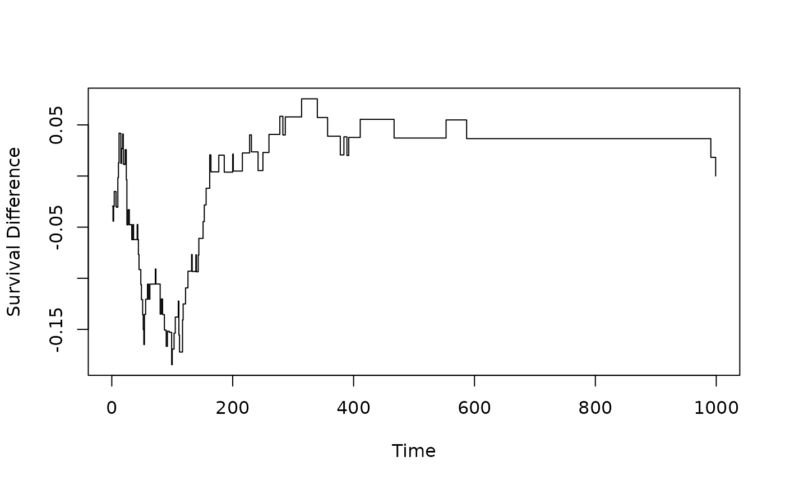
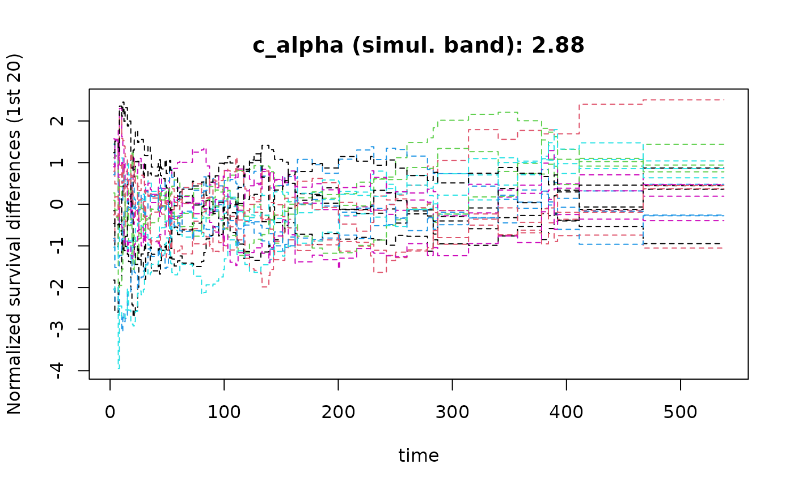

Calculates the difference in Kaplan-Meier curves between two groups, with confidence intervals and optional resampling-based simultaneous confidence bands.
Usage
KM_diff(
df,
tte.name = "tte",
event.name = "event",
treat.name = "treat",
weight.name = NULL,
at_points = sort(df[[tte.name]]),
alpha = 0.05,
seedstart = 8316951,
draws = 0,
risk.points = NULL,
draws.band = 0,
tau.seq = 0.25,
qtau = 0.025,
show_resamples = FALSE,
modify_tau = FALSE,
weight_variance = c("known", "estimated"),
weight_model = NULL
)Arguments
- df
Data frame containing survival data.
- tte.name
Character; name of time-to-event variable in
df.- event.name
Character; name of event indicator variable in
df(1=event, 0=censored). Logical (TRUE = event) and 1/2 coding (2 = event, assurvival::Survreads it) are also accepted.- treat.name
Character; name of treatment group variable in
df(0=control, 1=treatment).- weight.name
Character or NULL; name of weights variable in
df.- at_points
Numeric vector; time points at which the curves are returned: finite and non-decreasing (duplicates are allowed and returned as given). The Kaplan-Meier value at each point is right-continuous, whether or not the points include the event times. Default: the sorted observed times.
- alpha
Numeric; significance level for the pointwise intervals and the simultaneous band (the band's critical value is the
1 - alphaquantile of the resampled suprema). Default: 0.05.- seedstart
Integer; random seed for reproducibility. Default: 8316951.
- draws
Integer; number of draws for pointwise variance estimation. Default: 0.
- risk.points
Numeric vector; time points for risk table display.
- draws.band
Integer; number of draws for simultaneous confidence bands. Default: 0.
- tau.seq
Numeric; step size for tau sequence when
modify_tau=TRUE. Default: 0.25.- qtau
Numeric; quantile for tau range restriction. Default: 0.025.
- show_resamples
Logical; whether to plot the first 20 standardised resampled difference curves (only when
draws.band > 0). Default: FALSE.- modify_tau
Logical; whether to restrict time range for simultaneous bands. Default: FALSE.
- weight_variance
How the weights are treated in standard errors, intervals, bands and tests.
"known"(default): as fixed, known numbers."estimated": as estimated by the logistic propensity model given inweight_model, whose estimation is carried into the inference. Estimates never change. See the section "Estimated weights".- weight_model
With
weight_variance = "estimated", the object returned byps_weightsfor the rows ofdf, in the same order; its weights must be the columnweight.name. Ignored with"known".
Value
A list containing:
- at_points
Time points used in calculations
- surv0, surv1
Survival estimates for control and treatment groups
- sig2_surv0, sig2_surv1
Variance estimates for survival curves
- dhat
Survival difference (S1 - S0) at each time point
- sig2_dhat
Variance of survival difference
- lower, upper
Pointwise confidence limits (1 - alpha/2)
- sb_lower, sb_upper
Simultaneous band limits (if draws.band > 0)
- c_alpha_band
Critical value for simultaneous band (if draws.band > 0)
- dhat_star
Matrix of resampled differences (if draws.band > 0)
- Zdhat_star
Standardized resampled differences (if draws.band > 0)
- weight_variance
"known"or"estimated": how the weights were treated
Details
This function computes the difference in Kaplan-Meier survival curves, delta(t) = S_1(t) - S_0(t),
along with variance estimates and confidence intervals.
When draws.band > 0, simultaneous confidence bands are constructed using
the supremum distribution of the standardized difference process. These bands
maintain the specified coverage probability across all time points simultaneously.
The pointwise variance of each arm's curve is Greenwood's formula for unweighted data (or all
weights equal) and the robust variance for weights that are not all equal (see the section below),
or resampling-based when draws > 0 and the weights are not all equal.
For weights that are not all equal, the resampled curves (surv0_star, surv1_star,
and from them dhat_star, Zdhat_star, the simultaneous band and
cumulative_rmst_bands) are built from the same per-subject contributions as the
robust variance (resampling_survival), so the variance across draws matches the
analytic variance. With no weights or all weights equal they are unchanged.
Note
Treatment must be coded as 0=control, 1=experimental, and both arms must have observations. Missing values, non-finite or negative times and negative weights are errors (rows are never dropped silently); zero weights are allowed and those rows contribute nothing: they do not affect which variance formula runs either (whether the weights are all equal is decided on the positive weights).
With weight_variance = "estimated" the variance of the difference is not the sum of the
two arm variances, and draws must be 0.
Variance of the Kaplan-Meier estimate
With no weights, or with all weights equal, the variance of a Kaplan-Meier estimate is
Greenwood's formula, and these results are unchanged. When the weights are not all equal it is
the robust (infinitesimal-jackknife) variance
$$\widehat{Var}[\hat S(t)] = \hat S(t)^2 \sum_i w_i^2 \psi_i(t)^2,$$
$$\psi_i(t) = \frac{D_i 1(U_i \le t)}{Y_w(U_i) - dN_w(U_i)} - \sum_{s \le \min(t, U_i)} \frac{dN_w(s)}{Y_w(s)\{Y_w(s) - dN_w(s)\}},$$
where \(U_i\), \(D_i\) and \(w_i\) are subject \(i\)'s time, event indicator and weight,
\(Y_w(s)\) is the weighted number at risk, \(dN_w(s)\) the weighted number of events at
\(s\), the sum runs over event times, and a term is 0 where
\(Y_w(s) - dN_w(s) \le 10^{-10} Y_w(s)\). It equals the standard error of
survival::survfit(weights = w, robust = TRUE) (on the time-fixed data), reduces to
Greenwood's formula at equal weights, and does not depend on the scale of the weights.
With draws > 0 and unequal weights the variance is instead the variance over resampling
draws of \(\sum_i G_i w_i \psi_i(t)\) (standard-normal multipliers \(G_i\)), which estimates
the same quantity; resampled curves for weighted data are built from the same per-subject
contributions (see resampling_survival).
By default the weights are treated as fixed and known. For weights estimated by a logistic
propensity model, weight_variance = "estimated" carries their estimation into the standard
error (section "Estimated weights" of df_counting). When the weights are extreme
(low effective sample size) the standard error can be too small under either option.
Confidence Intervals vs Bands
Pointwise CIs (
lower,upper): Cover the true difference at each time point with probability 1-alphaSimultaneous bands (
sb_lower,sb_upper): Cover the entire difference curve with probability 1-alpha
Estimated weights
Propensity-score weights are estimated from the data. weight_variance says how standard
errors, intervals, bands and tests treat them.
"known"(default)The weights are fixed, known numbers: the formulas of the two sections above.
weight_modelis ignored."estimated"The weights were estimated by a logistic regression for the treatment, given as
weight_model(the object returned byps_weights), and that estimation is carried into the inference.
Estimates never change: survival curves, their difference, RMST, the log-rank score, hazard ratios, counts and risk tables are identical under the two options. Only standard errors, intervals, bands and tests differ.
Notation. There are \(n\) subjects, the rows analysed. Subject \(i\) has arm \(A_i\), row \(x_i\) of the model matrix of the propensity model (\(p\) columns), fitted probability \(e_i\) and weight \(w_i\) (written \(a_i\) in the score formulas above). The influence of subject \(i\) on the fitted coefficients and the derivative of its weight in the coefficients are $$IF_i = \Big\{\sum_j x_j x_j' e_j (1 - e_j)\Big\}^{-1} x_i (A_i - e_i), \qquad dw_i = -\frac{1 - e_i}{e_i} x_i \ (A_i = 1), \quad dw_i = \frac{e_i}{1 - e_i} x_i \ (A_i = 0)$$ (for stabilised weights \(w_i\) and \(dw_i\) are multiplied by the arm proportion).
Kaplan-Meier estimate of a group \(g\) (an arm; an arm within a stratum; all subjects). With
\(\psi_i(t)\) the influence value of the section "Variance of the Kaplan-Meier
estimate", computed from the group's own weighted counts,
$$D_g(t) = \sum_{k \in g} \psi_k(t)\, dw_k, \qquad \Phi_i(t) = 1(i \in g)\, w_i \psi_i(t) + IF_i' D_g(t) \quad (i = 1, \ldots, n),$$
$$\widehat{Var}[\hat S_g(t)] = \hat S_g(t)^2 \sum_{i=1}^n \Phi_i(t)^2.$$
Every subject contributes, also those outside the group, through the model. The variance of the
difference of the two arms is
$$\widehat{Var}[\hat S_1(t) - \hat S_0(t)] = \sum_{i=1}^n \{\hat S_1(t) \Phi^1_i(t) - \hat S_0(t) \Phi^0_i(t)\}^2,$$
which is not the sum of the two arm variances: the arms share the model's coefficients.
A resampled curve of arm \(a\) is
\(-\hat S_a(t) \sum_{i=1}^n G_i \Phi^a_i(t)\) with the
standard-normal multipliers \(G_i\) that KM_diff generates in any case; the
resampled difference curves, the simultaneous band and the RMST variance and band of
cumulative_rmst_bands follow from them unchanged.
Score of the log-rank test and of the weighted Cox estimate. With
\(\psi_i(\beta)\) the contribution of the section "Variance of the log-rank and Cox
score with subject weights", computed within each stratum,
$$B(\beta) = \sum_{j=1}^n \frac{\psi_j(\beta)}{a_j}\, dw_j, \qquad \psi^{ew}_i(\beta) = \psi_i(\beta) + IF_i' B(\beta), \qquad \widehat{Var}\{U(\beta)\} = \sum_{i=1}^n \psi^{ew}_i(\beta)^2.$$
The log-rank z-score, the variance of the log hazard ratio estimate (the sum at
\(\hat\beta\) over the squared information) and a resampled score
(\(-\sum_i G_i \psi^{ew}_i(\beta)\)) are formed as before with
\(\psi^{ew}\) in place of \(\psi\). In a stratified analysis the variance is this
single sum over all subjects, not a sum of per-stratum variances. The cumulative variance of
wlr_cumulative is \(\sum_i \{c_i(t) + IF_i' B(t)\}^2\)
with \(c_i(t)\) the contribution of subject \(i\) to the score up to \(t\) and
\(B(t) = \sum_j \{c_j(t) / a_j\} dw_j\); in
wlr_dhat_estimates the contribution to the survival difference is
\(d_i + IF_i' (\hat S_0 D_0 - \hat S_1 D_1)\) at the grid point
read for tzero, and the covariance uses both adjusted contributions. The outputs of
df_counting() that come from the survival package (logrank_results,
cox_results$score, $se, $hr_ci, $pval) carry the same adjustment,
applied to coxph()'s weighted score and dfbeta residuals \(r\):
\(r_i + IF_i' \sum_j (r_j / w_j) dw_j\).
How to use it. Fit the propensity model on exactly the rows to be analysed with
ps_weights, put its weights in a column of df, and pass
weight_variance = "estimated" and weight_model to df_counting(),
KM_diff, cumulative_rmst_bands or plotKM.band_subgroups.
cox_rhogamma, wlr_cumulative and wlr_dhat_estimates take the
option from the df_counting() result they are given (its elements weight_variance and
ew_parts). The rows of df, the treatment column and the weight column must be those of
weight_model; anything else is an error.
Scope and limits of this version.
A logistic
glmfor a binary treatment, fitted on exactly the rows analysed. For weights from any other model use"known".A subgroup analysis that reuses weights from a model fitted on the full sample must use
"known": the model's rows are then not the rows analysed. (The subgroup curves ofplotKM.band_subgroups()are point estimates and are not affected.)draws > 0(the resampling-based pointwise variance) is not available with"estimated";draws.bandand the resampling ofcox_rhogamma()are.The time weights of the scheme (Fleming-Harrington and the others) depend on the weighted pooled curve; that dependence on the estimated weights is ignored.
With stabilised weights the arm proportion is treated as a fixed number. The Kaplan-Meier quantities do not depend on that: they are unchanged when an arm's weights are multiplied by a constant.
With
"estimated"the influence-based formulas always run; whether the weights are all equal is not tested.Carrying the estimation through does not repair extreme weights: when the effective sample size (
df_counting()$ess) is a small fraction of an arm, standard errors, intervals and tests can be too optimistic under either option.
The device of carrying the estimation of a nuisance quantity into the inference by perturbing its estimate is that of Leon, Cai and Wei (2009); it is used here in linearised form.
See also
df_counting for full survival analysis
plotKM.band_subgroups for visualization
cumulative_rmst_bands for RMST analysis
Other survival_analysis:
cox_rhogamma(),
df_counting(),
ps_weights(),
wt.rg.S()
Examples
library(survival)
str(veteran)
#> 'data.frame': 137 obs. of 8 variables:
#> $ trt : num 1 1 1 1 1 1 1 1 1 1 ...
#> $ celltype: Factor w/ 4 levels "squamous","smallcell",..: 1 1 1 1 1 1 1 1 1 1 ...
#> $ time : num 72 411 228 126 118 10 82 110 314 100 ...
#> $ status : num 1 1 1 1 1 1 1 1 1 0 ...
#> $ karno : num 60 70 60 60 70 20 40 80 50 70 ...
#> $ diagtime: num 7 5 3 9 11 5 10 29 18 6 ...
#> $ age : num 69 64 38 63 65 49 69 68 43 70 ...
#> $ prior : num 0 10 0 10 10 0 10 0 0 0 ...
veteran$treat <- as.numeric(veteran$trt) - 1
# Basic KM difference
result <- KM_diff(
df = veteran,
tte.name = "time",
event.name = "status",
treat.name = "treat"
)
# Plot the difference
plot(result$at_points, result$dhat, type = "s",
xlab = "Time", ylab = "Survival Difference")

# With simultaneous confidence bands
result_band <- KM_diff(
df = veteran,
tte.name = "time",
event.name = "status",
treat.name = "treat",
draws.band = 1000,
modify_tau = TRUE,
show_resamples = TRUE
)
